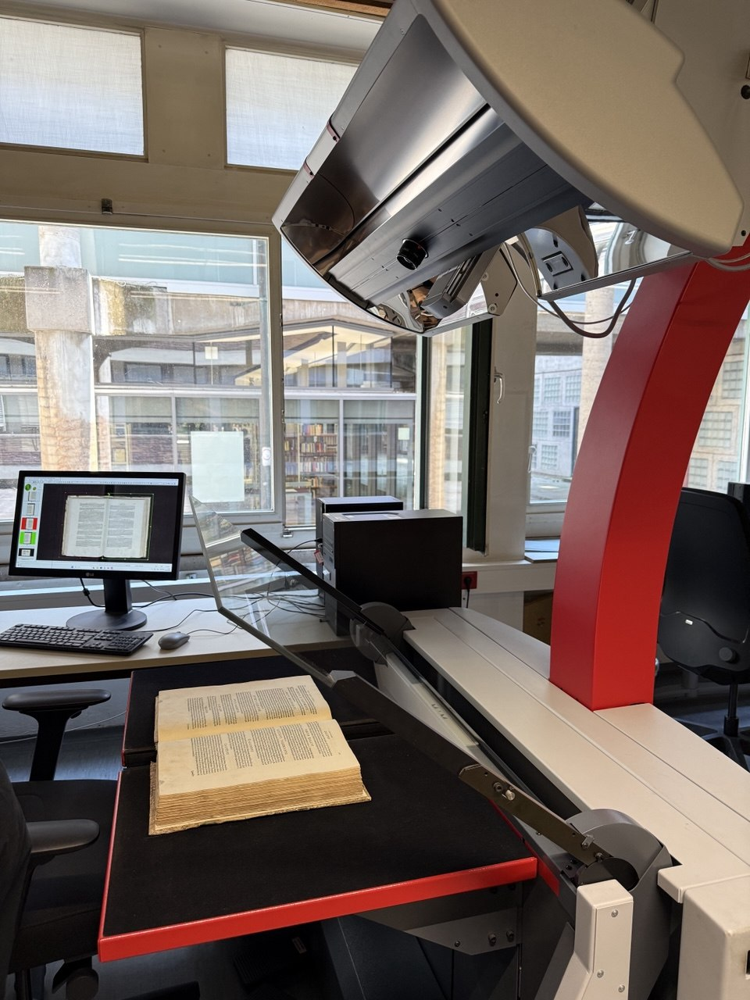
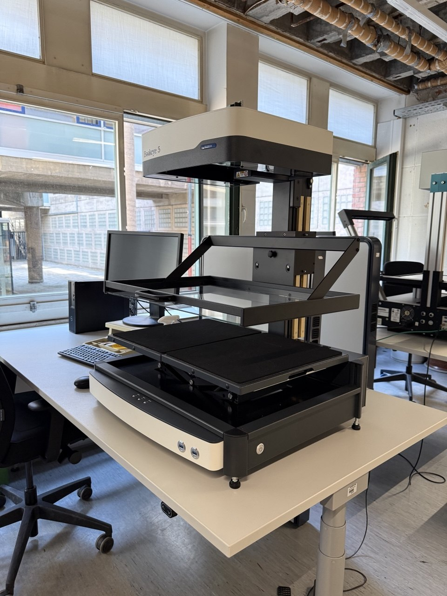
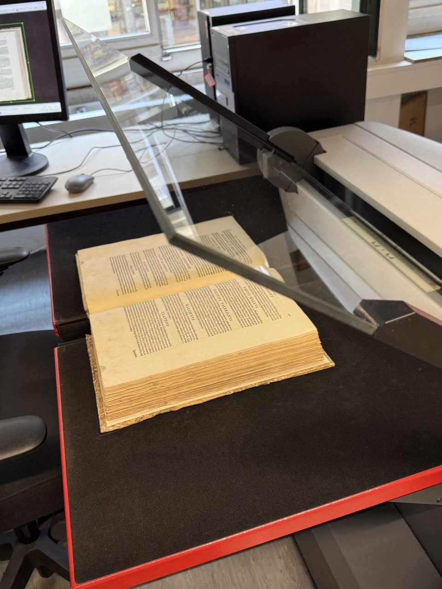
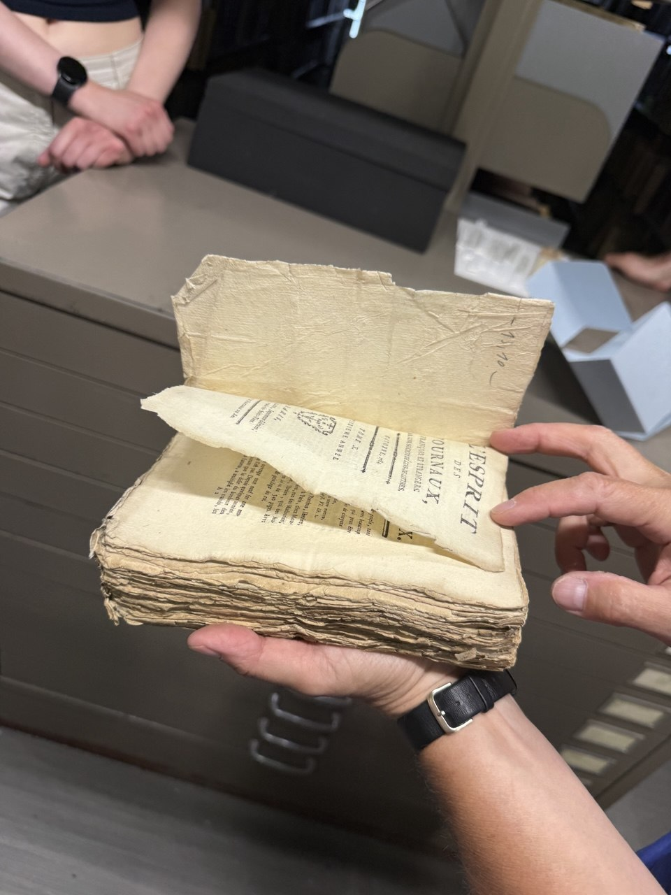
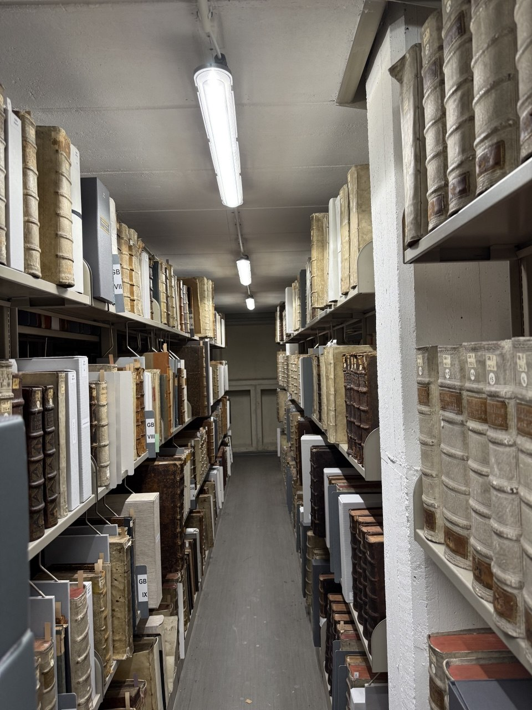
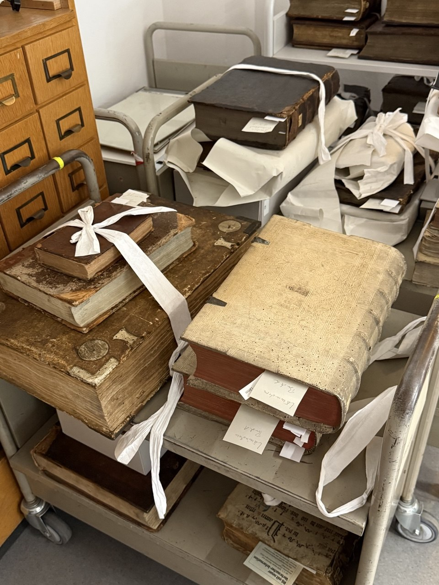

Sitzung 10: Digitalisierungszentrum der USB Köln
Einleitung: In dieser Sitzung besuchten wir das Digitalisierungszentrum der Universitäts- und Stadtbibliothek Köln (USB). Dort lernten wir verschiedene Scanner kennen, mit denen alte Bücher und Dokumente digitalisiert werden. Außerdem besichtigten wir das Magazin, in dem besonders wertvolle historische Bücher aufbewahrt werden.
Weiterführender Link: Universitäts- und Stadtbibliothek Köln (USB)
Digitalisierung alter Bücher und Dokumente
Alte Bücher, Handschriften und Dokumente werden mit der Zeit beschädigt. Deshalb werden sie mit speziellen Buchscannern digitalisiert. So können Forschende die digitalen Kopien benutzen, ohne die Originale zu berühren. Gleichzeitig bleiben die Informationen langfristig erhalten. Die Digitalisierung ersetzt das Original jedoch nicht. Historische Bücher müssen auch nach dem Scannen weiter aufbewahrt werden.
Weiterführender Link: USB Köln – Bestandserhaltung und Digitalisierungszentrum
OCR
OCR (Optical Character Recognition) erkennt Texte auf gescannten Seiten und wandelt sie in durchsuchbaren digitalen Text um. Dadurch können Wörter und Inhalte schnell gefunden werden.
Herausforderungen der Digitalisierung
Die Digitalisierung benötigt viel Zeit, Fachwissen und Personal. Außerdem können beim Scannen nicht alle Informationen eines Originals vollständig erfasst werden. Ein weiteres Problem ist, dass manche Unternehmen alte Bücher zum Scannen auseinandernehmen. Nach der Digitalisierung wird das Original oft zerstört. Auch Bibliotheken müssen wegen Platzmangel manchmal Bestände reduzieren. Dadurch können wertvolle Originale verloren gehen.
Aufbewahrung historischer Bücher
Historische Bücher werden unter besonderen Bedingungen aufbewahrt. Temperatur und Luftfeuchtigkeit sollen möglichst konstant bleiben, damit die Bücher nicht beschädigt werden. Beschädigungen wie Schimmel werden regelmäßig kontrolliert. Betroffene Bücher werden restauriert und erst danach wieder benutzt.
Weiterführender Link: USB Köln – Historische Sammlungen
Historische Bücher
Früher wurden Bücher oft ohne Einband verkauft. Erst die Käufer entschieden später, wie das Buch gebunden werden sollte. Deshalb sehen historische Bücher heute oft unterschiedlich aus. Der wissenschaftliche Wert eines Buches besteht nicht nur aus seinem Inhalt. Auch das Original, seine Geschichte, seine Herkunft (Provenienz) und seine Seltenheit sind wichtige Informationen.
Fazit
Die Digitalisierung macht historische Bestände leichter zugänglich und schützt sie vor häufiger Benutzung. Trotzdem ersetzt sie das Original nicht. Digitale Daten benötigen Strom, Hardware und Software und müssen langfristig gepflegt werden. Deshalb bleiben sowohl die Originale als auch die digitalen Kopien für Forschung und Kultur wichtig.
Material aus der Sitzung





